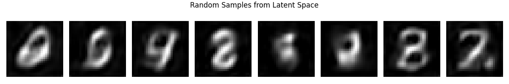
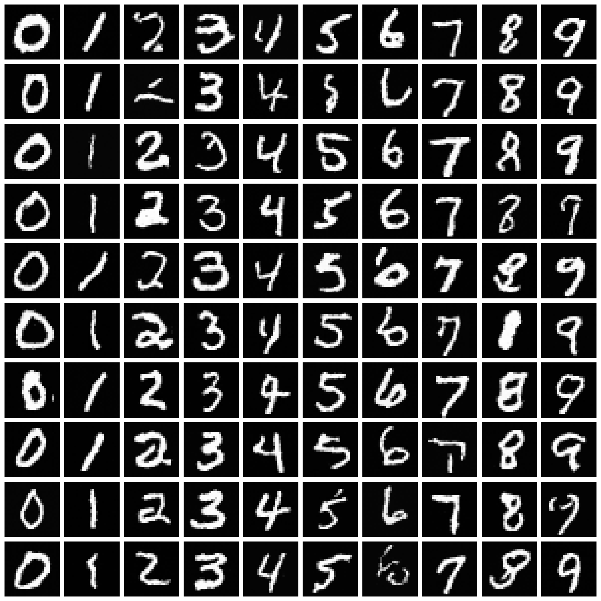

Same dataset, two completely different generative models. Project 10 is a convolutional VAE, project 11 is a diffusion transformer (DiT). Press generate on both below and you'll see the whole story in about ten seconds: the VAE spits out a digit instantly and it's a bit of a smudge, the DiT takes a thousand steps and comes out looking like someone actually wrote it.
Project 10 & 11 — MNIST: VAE vs DiT
Live demo
Project 10
VAE
One forward pass, z ~ N(0, I)
Project 11
DiT
1000 reverse-diffusion steps
VAE generates instantly. DiT needs a digit picked first, then takes a few seconds.
What's actually different here
The VAE squashes a 28×28 digit down to a 32-number latent vector and back up through a couple of transposed-conv-ish upsample blocks. Sampling means drawing a random z from a unit Gaussian and running it through the decoder once. That's it, one forward pass, done in milliseconds. The catch is the KL term in the loss pulls every digit's encoding toward the same blob of latent space, so the decoder never has to commit to a sharp edge anywhere. It hedges. You get the average of every "3" it ever saw.
The DiT does the opposite. It starts from pure noise and asks the network "what's one small step less noisy than this" a thousand times in a row, each time conditioned on the digit you picked and how far along the noising schedule it is. Every step only has to make a tiny local correction, so the network never has to solve "draw a 7" in one shot. It just has to solve "denoise this a bit," which turns out to be a much easier problem, repeated a thousand times. That's the whole trade: VAE is fast and blurry, DiT is slow and crisp.
Random samples, VAE (top) vs the class-conditional DiT samples I got at the end of training (below, one column per digit):


Building the DiT was the hard part
Getting the U-Net diffusion model from project 8 working was fairly painless. The
transformer version fought me the whole way. First pass, the samples came out as
grey blobs with no digit-like structure at all. Turned out the AdaLN modulation
layers (the linear layers that turn the timestep + label embedding into per-block
shift/scale/gate values) were badly initialised, so the gates were letting through
near-zero signal and the network found it cheaper to just learn "predict the input
back as noise" — a real local minimum for the MSE loss, since at large t the input
genuinely is mostly noise. Zero-initialising those AdaLN weights (so every block
starts as a no-op and has to earn its way into doing something) fixed it. That's
a real trick from the original DiT paper, not something I invented, but I only
understood why it mattered after staring at cosine similarities between
ε̂ at t=0 and t=999 and realising they were nearly identical, meaning the model
wasn't even looking at the timestep. If you want the actual probes I used to catch
this, they're in diagnostics.py next to the project.
Code
Full source on GitHub — abridged here for readability.
VAE — encode/decode
class Model(nn.Module):
def __init__(self):
super().__init__()
# conv encoder: 28x28 -> 64x7x7, then a linear head to (mean, logvar)
self.mean = nn.Linear(64 * 7 * 7, LATENT_DIM)
self.lvar = nn.Linear(64 * 7 * 7, LATENT_DIM)
# linear + upsample decoder: LATENT_DIM -> 64x7x7 -> 28x28
self.decode_fc = nn.Linear(LATENT_DIM, 64 * 7 * 7)
def encode(self, x):
r = self.pool2(F.relu(self.conv2(self.pool1(F.relu(self.conv1(x))))))
r = torch.flatten(r, 1)
return self.mean(r), self.lvar(r)
def decode(self, z):
r = F.relu(self.decode_fc(z)).reshape(z.shape[0], 64, 7, 7)
r = self.dcn1a(self.dcn1(self.up1(r)))
return self.dcn2(self.up2(r))
def forward(self, x):
mu, lv = self.encode(x)
z = mu + torch.exp(0.5 * lv) * torch.randn_like(lv) # reparameterisation trick
return self.decode(z), mu, lvDiT — an AdaLN-modulated transformer block
class DiTBlock(nn.Module):
def __init__(self, hidden, heads, mlp_ratio=4):
super().__init__()
self.adal = nn.Linear(hidden, 6 * hidden) # conditioning -> 6 modulation vectors
self.adaa = nn.SiLU()
self.preln = nn.LayerNorm(hidden, elementwise_affine=False)
self.attn = nn.MultiheadAttention(hidden, heads, batch_first=True)
self.mlpln = nn.LayerNorm(hidden, elementwise_affine=False)
self.mlp = nn.Sequential(nn.Linear(hidden, hidden * mlp_ratio), nn.GELU(),
nn.Linear(hidden * mlp_ratio, hidden))
def forward(self, x):
x, c = x # c = conditioning: sinusoidal(t) embedding + label embedding
shift1, scale1, gate1, shift2, scale2, gate2 = \
self.adal(self.adaa(c)).chunk(6, dim=-1)
h = self.preln(x) * (1 + scale1) + shift1
a, _ = self.attn(h, h, h, need_weights=False)
x = x + gate1 * a # gate starts at ~0
h = self.mlpln(x) * (1 + scale2) + shift2
return x + gate2 * self.mlp(h)
# The fix that mattered: zero-init the adaLN weight so every block starts
# as a no-op (gate ~ 0) and has to earn its way into modulating anything.
for blk in model.blocks:
nn.init.zeros_(blk.adal.weight)DiT — reverse sampling
@torch.no_grad()
def sample_reverse(net, num_samples, value):
net.eval()
x_t = torch.randn(num_samples, 1, 28, 28)
for t in reversed(range(tmax)):
t_en = torch.full((num_samples,), t, dtype=torch.long)
label = torch.full((num_samples,), value, dtype=torch.long)
eps_hat = net((x_t, t_en, label))
alpha_t, alpha_bar_t, beta_t = alpha_tensor[t], alpha_prod_tensor[t], beta_tensor[t]
mu_t = (1.0 / alpha_t.sqrt()) * (x_t - ((1 - alpha_t) / (1 - alpha_bar_t).sqrt()) * eps_hat)
x_t = mu_t + beta_t.sqrt() * torch.randn_like(x_t) if t > 0 else mu_t
return x_t